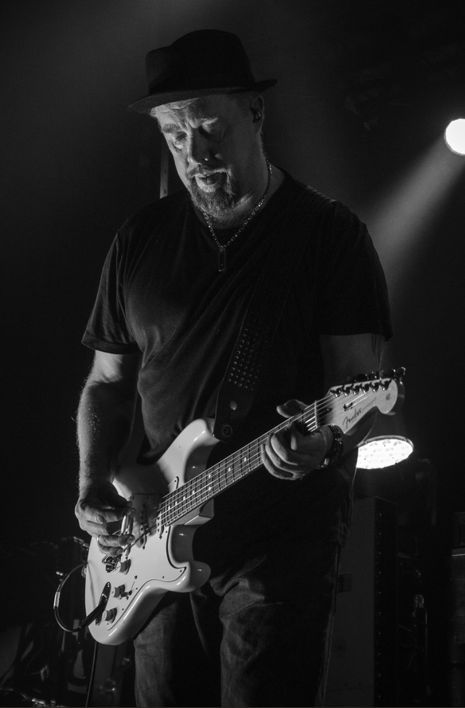
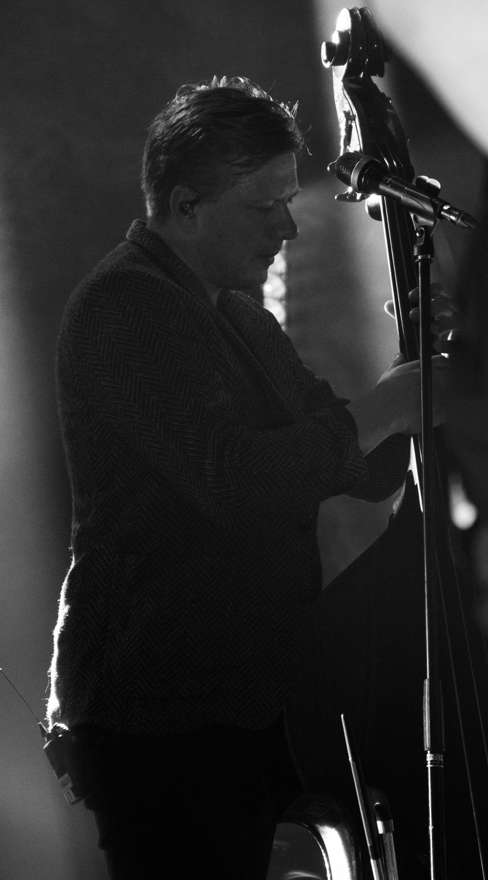

Fortellinger mellom lys og mørke
Jeg jobber med film og klipp som utforsker kontraster, uttrykk og visuelle historier. Prosjektene mine handler om stemning, rytme og øyeblikk som får lov til å leve.

Jeg jobber med film og klipp som utforsker kontraster, uttrykk og visuelle historier. Prosjektene mine handler om stemning, rytme og øyeblikk som får lov til å leve.
Hovedfilmen vi produserte på Danvik folkehøyskole. Jeg var A‑foto og klipper, og hadde ansvar for både det visuelle uttrykket og den endelige fortellingen.

Rytmisk klipp som deler mennesker og deres miljø. En studie i bevegelse, farge og hvordan øyeblikk forteller deres egen historie.
En inntrengelse i stillhet og puls. Prosjektet utforsker kontraster gjennom lyddesign og visuell komposisjon som skaper spenning.

Et visuelt utforskingsprosjekt som kombinerer stillhet og bevegelse. Fokus på komposisjon og lysets rolle i den emosjonelle fortellinga.

En eksperimentell tilnærming til filmisk språk. Prosjektet utfordrer konvensjoner gjennom uvanlige vinkler og rytmisk klipp.

En samling av visuelle øyeblikk og portretter. Hver bilde forteller sin egen subtile historie gjennom lys, komposisjon og timing.